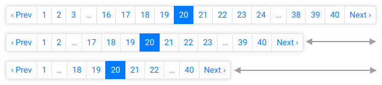
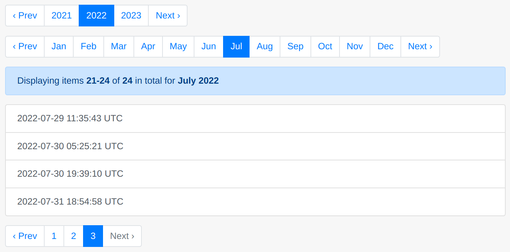

#
Pagy


#
🏆 The Best Pagination Ruby Gem 🥇
#
✴ What's new in 9.0+ ✴
- Wicked-fast Keyset Pagination for big data! It works with
ActiveRecord::RelationandSequel::Datasetsets. - More Playground Apps to showcase, clone and develop pagy APPs without any setup on your side
- Lots of refactorings and optimizations
- See the Changelog for possible breaking changes
#
🚀 🚀 🚀 🚀 🚀


Each dot in the visualization above represents the resources that Pagy consumes for one full rendering. The other gems consume hundreds of times as much for the same rendering.
The IPS/Kb ratio is calculated out of speed (IPS) and Memory (Kb): it shows how well each gem uses each Kb of memory it allocates/consumes.
Notice: the above charts refers to the comparison of the basic pagy v3.0.0 helper with will_paginate v3.1.7
and kaminari v1.1.1.
While it's not up-to-date, you can expect roughly similar results with the latest versions, maybe a bit less dramatic in
performance due to the multiple features added to pagy since v3 (e.g. customizable and translated aria-labels). However, consider
that the difference become A LOT bigger in favor of pagy if you use *nav_js helpers, Pagy::Countless or JSON and client side
pagination that are not part of the comparison because missing in the other gems.
See the Detailed Gems Comparison for full details.
#
🤩 It does it all. Better.
- It works in any environment With Rack frameworks (Rails, Sinatra, Padrino, etc.) or in pure ruby without Rack
- It works with any collection
With any ORM, any DB, any search
gem, elasticsearch_rails, meilisearch, searchkick,
ransack, and just about any list, even if you cannot count it - It supports all kinds of pagination calendar, countless, geared, incremental, auto-incremental, infinite, headers, JSON, Keyset Pagination
- It supports the most popular CSS Frameworks and APIs like bootstrap, bulma, tailwind, JSON:API
- It supports faster client-side rendering With classic or innovative UI components (see Javascript Components) or by serving JSON to your favorite Javascript framework
- It has 100% of test coverage for Ruby, HTML and Javascript E2E ( see Pagy Workflows CI)
#
😎 It's easy to use and customize
Code for basic pagination...
# Include it in the controllers (e.g. application_controller.rb)
include Pagy::Backend
# Include it in the helpers (e.g. application_helper.rb)
include Pagy::Frontend
# Wrap your collections with pagy in your actions
@pagy, @records = pagy(Product.all)Optionally set your defaults in the pagy initializer:
# Optionally override some pagy default with your own in the pagy initializer
Pagy::DEFAULT[:limit] = 10 # items per page
Pagy::DEFAULT[:size] = 9 # nav bar links
# Better user experience handled automatically
require 'pagy/extras/overflow'
Pagy::DEFAULT[:overflow] = :last_page<%# Render a view helper in your views (skipping nav links for empty pages) %>
<%== pagy_nav(@pagy) if @pagy.pages > 1 %>Or, choose from the following view helpers:
| View Helper Name | Preview (Bootstrap Style shown) |
|---|---|
pagy_nav(@pagy) |
|
pagy_nav_js(@pagy) |
 |
pagy_info(@pagy) |
|
pagy_combo_nav_js(@pagy) |
 |
pagy_limit_selector_js |
|
pagy_nav(@calendar[:year])pagy_nav(@calendar[:month])(other units: :quarter, :week, :day and custom) |
 |
(See the Quick Start)
Customization for CSS frameworks...
# Require a CSS framework extra in the pagy initializer (e.g. bootstrap)
require 'pagy/extras/bootstrap'<%# Use it in your views %>
<%== pagy_bootstrap_nav(@pagy) %>(See all the CSS Framework Extras)
Customization for special collections...
# Require some special backend extra in the pagy initializer (e.g. elasticsearch_rails)
require 'pagy/extras/elasticsearch_rails'
# Extend your models (e.g. application_record.rb)
extend Pagy::ElasticsearchRails
# Use it in your actions
response = Article.pagy_search(params[:q])
@pagy, @response = pagy_elasticsearch_rails(response)(See all the Search Extras)
Customization for client-side|JSON rendering...
# Require the metadata extra in the pagy initializer
require 'pagy/extras/metadata'
# Use it in your actions
pagy, records = pagy(Product.all)
render json: { data: records,
pagy: pagy_metadata(pagy) }(See all the Backend Tools)
Customization for headers pagination for APIs...
# Require the headers extra in the pagy initializer
require 'pagy/extras/headers'
# Use it in your actions
pagy, records = pagy(Product.all)
pagy_headers_merge(pagy)
render json: records(See all the Backend Tools)
Customization for JSON:API pagination...
# Require the jsonapi extra in the pagy initializer
require 'pagy/extras/jsonapi'
# Use it in your actions
pagy, records = pagy(Product.all)
render json: { data: records,
links: pagy_jsonapi_links(pagy) }
# besides the query params will be nested. E.g.: ?page[number]=2&page[size]=100(See all the Backend Tools)
More customization with Extras that add special options and manage different components, behaviors, Frontend or Backend environments... usually by just requiring them (and optionally overriding some default).
See also the How To Page
#
🤓 It's well documented and supported
#
Documentation
- Migrate from WillPaginate and Kaminari (practical guide)
- Quick Start
- Documentation
- How To (quick recipes)
- Changelog
- Deprecations
- How Pagy's Docs work?
#
Support
#
Posts and tutorials
- Migrate from WillPaginate and Kaminari (practical guide)
- Detailed Gems Comparison (charts and analysis)
- Benchmarks and Memory Profiles Source (Rails app repository)
- Faster Pagination with Pagy introductory tutorial by Sirajus Salekin
- Pagination with Pagy by Tiago Franco
- Quick guide for Pagy with Sinatra and Sequel by Victor Afanasev
- Integrating Pagy with Hanami by Paweł Świątkowski
- Stateful Tabs with Pagy by Chris Seelus
- Endless Scroll / Infinite Loading with Turbo Streams & Stimulus by Stefan Wienert.
- Build Load More Pagination with Pagy and Rails Hotwire by Maful. ( This tutorial shows how you can turbo_stream with GET requests).
- Pagination with Hotwire by Jonathan Greenberg
- Pagination and infinite scrolling with Rails and the Hotwire stack by David Colby
- Building a dynamic data grid with search and filters using rails, hotwire and ransack by Benito Serna.
- Pagination for Beginners: What is it? Why bother? by Ben Koshy.
- Handling Pagination When POSTing Complex Search Forms by Ben Koshy.
- How to Override pagy methods only in specific circumstances by Ben Koshy.
- How to make your pagination links sticky + bounce at the bottom of your page by Ben Koshy.
- 日本語の投稿
- 한국어 튜토리얼
#
Screencasts


 and Hotwire + Infinite (Countless) Pagination")


 + Deep dive into building a sample Blogging Application")

")
")
")
")


#
Top 💯 Contributors
#
👏 Credits
Many thanks to:
- Ben Koshy for his contributions to the documentation, user support and interaction with external frameworks
- GoRails for the great Pagy Screencast and their top notch Rails Episodes
- Imaginary Cloud for continually publishing high-interest articles and helping to share Pagy when it just started
- JetBrains for their free OpenSource license project
- The Stargazers for showing their support
#
📦 Repository Info
How to contribute
See Contributing
Versioning
- Pagy follows the Semantic Versioning 2.0.0. Please, check the Changelog for breaking changes introduced by mayor versions. Using pessimistic version constraint in your Gemfile will ensure smooth upgrades.
Branches
- The
masterbranch is the latest rubygem-published release. It also contains docs and comment changes that don't affect the published code. It is never force-pushed. - The
devbranch is the development branch with the new code that will be merged in the next release. It could be force-pushed. - Expect any other branch to be internal, experimental, force-pushed, rebased and/or deleted even without merging.